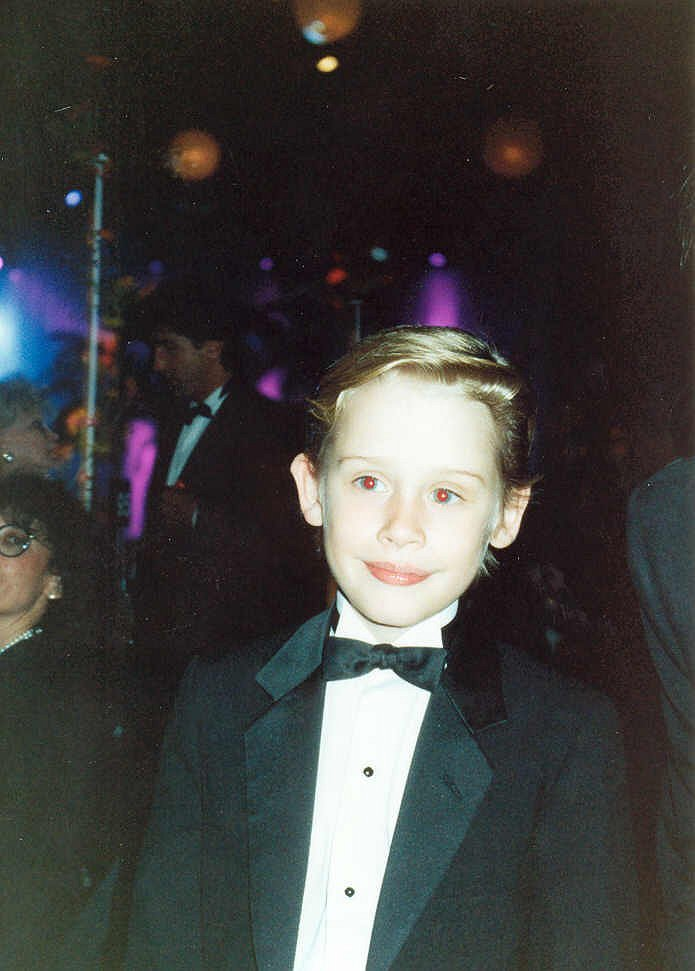
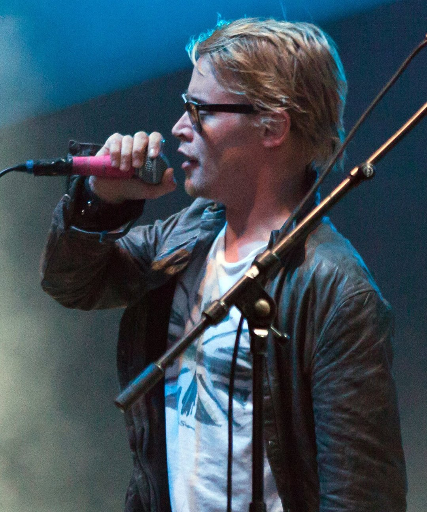
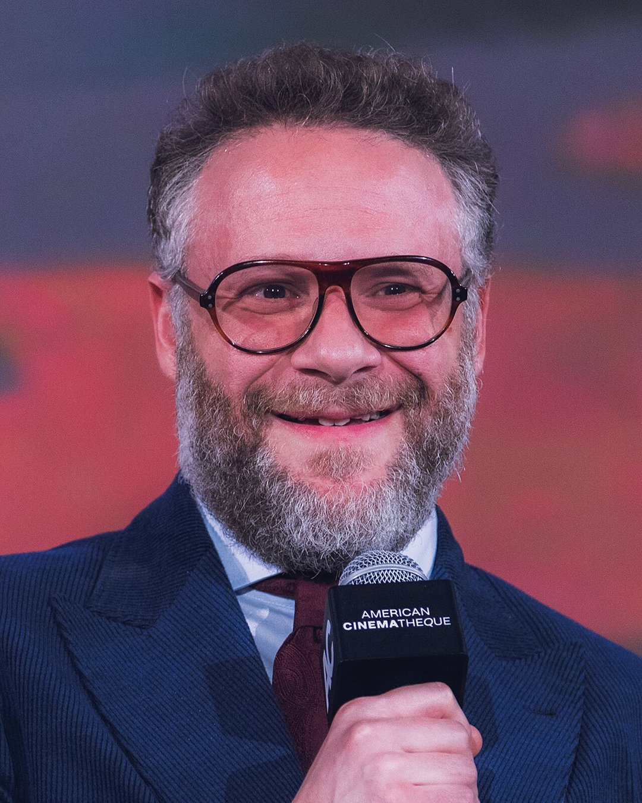

케빈이 이번엔 아빠가 되어 집 밖으로 쫓겨난다면 어떨까요. 맥컬리 컬킨이 지난해 직접 꺼냈던 이 아이디어가 실제 영화로 이어질 수도 있다는 소식이 나왔어요. 다만 기사 제목처럼 "돌아온다"고 정해진 단계는 아니에요. 지금까지 확인된 것과 아닌 것, 그리고 시리즈가 몇 편까지 나왔는지 순서대로 볼게요.
📷 사진 1 자리
▲ 1991년의 맥컬리 컬킨 / 사진: Alan Light / CC BY 2.0 / 위키미디어 공용
지금까지 확인된 것
미국 연예 매체 데드라인은 20일(현지 시간) 디즈니 산하 20세기 스튜디오가 '나 홀로 집에' 속편 제작 초기 단계에 들어갔다고 보도했어요. 영국 가디언과 미국 롤링스톤도 디즈니가 속편을 준비하고 있다고 전했어요.
시작은 컬킨이었어요. 올해 초 디즈니 경영진을 만나 속편을 직접 제안했고 각본 작업에도 참여하고 있어요. 각본에는 배우 겸 제작자 세스 로건과 에번 골드버그도 함께해요.
📷 사진 2 자리
▲ 2010년의 맥컬리 컬킨 / 사진: Matt Biddulph / CC BY-SA 2.0 / 위키미디어 공용
| 구분 | 내용 |
|---|---|
| 확인된 것 | 외신 보도: 디즈니(20세기 스튜디오) 속편 추진, 제작 초기 단계 |
| 확인된 것 | 컬킨이 올해 초 직접 제안, 각본 작업 참여 |
| 확인된 것 | 세스 로건·에번 골드버그 각본 참여 |
| 아직 아닌 것 | 디즈니 공식 발표(디즈니는 논평 거부) |
| 아직 아닌 것 | 컬킨 출연 확정, 개봉 시기 |
컬킨이 말했던 속편 이야기
컬킨은 지난해 '나 홀로 집에' 기념행사에서 자신이 생각한 속편 줄거리를 이야기한 적이 있어요. 어른이 되어 아버지가 된 케빈이 일에만 빠져 아이에게 소홀하다가 결국 집에서 쫓겨난다는 내용이에요. 어릴 때 집에 혼자 남겨졌던 케빈이 이번엔 반대편에 서는 셈이에요.
이 구상이 실제 각본에 들어갈지는 알려지지 않았어요. 제작이 성사되고 컬킨이 출연하면, 1992년 '나 홀로 집에 2' 이후 34년 만에 케빈으로 돌아오게 돼요. 올해 컬킨은 46세예요.
📷 사진 3 자리
▲ 각본에 참여하는 세스 로건(2025년) / 사진: Kevin Paul / CC BY 4.0 / 위키미디어 공용
원작 감독은 반대 입장
1편과 2편을 연출한 크리스 콜럼버스 감독은 회의적이에요. 그는 "30여년 전 우리가 만들었던 작품을 재현하려는 것은 실수라고 생각한다"고 말했어요. 판권을 가진 디즈니는 미국 매체 퍽의 논평 요청에 답하지 않았어요.
나 홀로 집에 시리즈 순서
| 순서 | 공개 연도 | 컬킨 출연 |
|---|---|---|
| 나 홀로 집에 | 1990 | 출연(케빈) |
| 나 홀로 집에 2 | 1992 | 출연(케빈) |
| 나 홀로 집에 3 | 1997 | 없음 |
| 나 홀로 집에 4 | 2002 | 없음 |
| 나 홀로 집에 5 | 2012 | 없음 |
| 나 홀로 즐거운 집에(디즈니+) | 2021 | 없음 |
1편은 전 세계에서 약 4억7600만 달러를 벌었고 1·2편을 합치면 8억 달러가 넘어요. 컬킨이 빠진 3편부터는 다른 배우가 주인공을 맡았어요.
이번 소식에서 가장 확실한 사실은 컬킨이 이 프로젝트를 먼저 꺼냈다는 점이에요. 반대로 원작 감독은 공개적으로 반대했고 디즈니는 말을 아끼고 있어요. 제목만 보고 "개봉 확정"으로 받아들이기보다, 디즈니가 공식 발표를 하는지부터 보는 게 맞는 단계예요.
'나 홀로 집에' 속편은 디즈니가 제작 초기 단계라는 보도만 나온 상태이고 공식 발표와 컬킨 출연 확정은 아직이에요.


